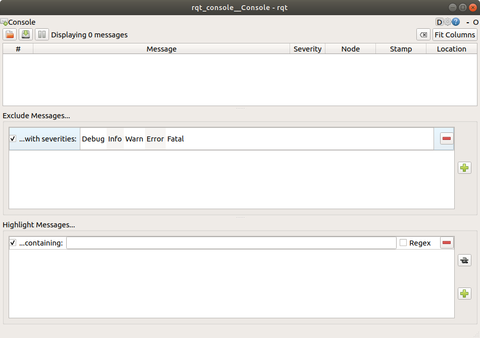
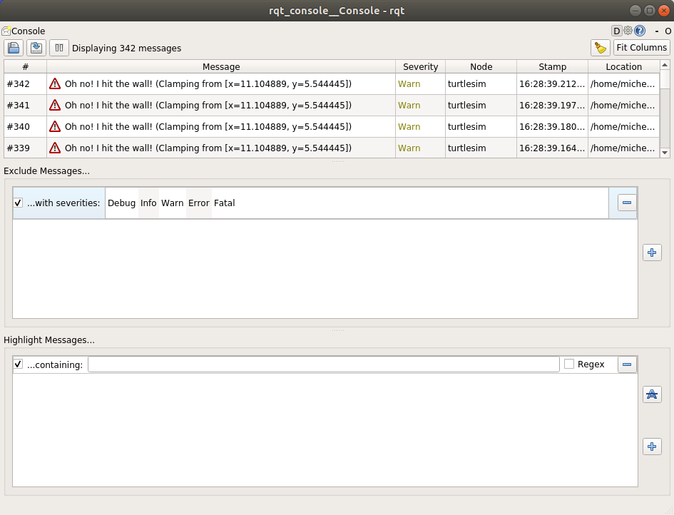

Using rqt_console to view logs - tutorial
rqt_console provides a graphical way to inspect log messages from ROS nodes.
This tutorial explains how to start the tool, generate log output, filter messages, and understand logger severity levels.
After completing it, you will know how to use logs to investigate events and issues in a running system.
Goal: Get to know rqt_console, a tool for introspecting log messages.
教學等級： 初學者
Time: 5 minutes
背景
rqt_console is a GUI tool used to introspect log messages in ROS 2.
Typically, log messages show up in your terminal.
With rqt_console, you can collect those messages over time, view them closely and in a more organized manner, filter them, save them and even reload the saved files to introspect at a different time.
Nodes use logs to output messages concerning events and status in a variety of ways. Their content is usually informational, for the sake of the user.
先備條件
You will need rqt_console and turtlesim installed.
As always, don't forget to source ROS 2 in every new terminal you open.
Tasks
1 Setup
Start rqt_console in a new terminal with the following command:
$ ros2 run rqt_console rqt_console
The rqt_console window will open:

The first section of the console is where log messages from your system will display.
In the middle you have the option to filter messages by excluding severity levels. You can also add more exclusion filters using the plus-sign button to the right.
The bottom section is for highlighting messages that include a string you input. You can add more filters to this section as well.
Now start turtlesim in a new terminal with the following command:
$ ros2 run turtlesim turtlesim_node
2 Messages on rqt_console
To produce log messages for rqt_console to display, let's have the turtle run into the wall.
In a new terminal, enter the ros2 topic pub command (discussed in detail in the topics tutorial) below:
$ ros2 topic pub -r 1 /turtle1/cmd_vel geometry_msgs/msg/Twist "{linear: {x: 2.0, y: 0.0, z: 0.0}, angular: {x: 0.0,y: 0.0,z: 0.0}}"
Since the above command is publishing the topic at a steady rate, the turtle is continuously running into the wall.
In rqt_console you will see the same message with the Warn severity level displayed over and over, like so:

Press Ctrl+C in the terminal where you ran the ros2 topic pub command to stop your turtle from running into the wall.
3 Logger levels
ROS 2's logger levels are ordered by severity:
Fatal
Error
Warn
Info
Debug
There is no exact standard for what each level indicates, but it's safe to assume that:
Fatalmessages indicate the system is going to terminate to try to protect itself from detriment.Errormessages indicate significant issues that won't necessarily damage the system, but are preventing it from functioning properly.Warnmessages indicate unexpected activity or non-ideal results that might represent a deeper issue, but don't harm functionality outright.Infomessages indicate event and status updates that serve as a visual verification that the system is running as expected.Debugmessages detail the entire step-by-step process of the system execution.
The default level is Info.
You will only see messages of the default severity level and more-severe levels.
Normally, only Debug messages are hidden because they're the only level less severe than Info.
For example, if you set the default level to Warn, you would only see messages of severity Warn, Error, and Fatal.
3.1 Set the default logger level
You can set the default logger level when you first run the /turtlesim node using remapping.
Enter the following command in your terminal:
$ ros2 run turtlesim turtlesim_node --ros-args --log-level WARN
Now you won't see the initial Info level messages that came up in the console last time you started turtlesim.
That's because Info messages are lower priority than the new default severity, Warn.
摘要
rqt_console can be very helpful if you need to closely examine the log messages from your system.
You might want to examine log messages for any number of reasons, usually to find out where something went wrong and the series of events leading up to that.
下一步
The next tutorial will teach you about starting multiple nodes at once with ROS 2 Launch.